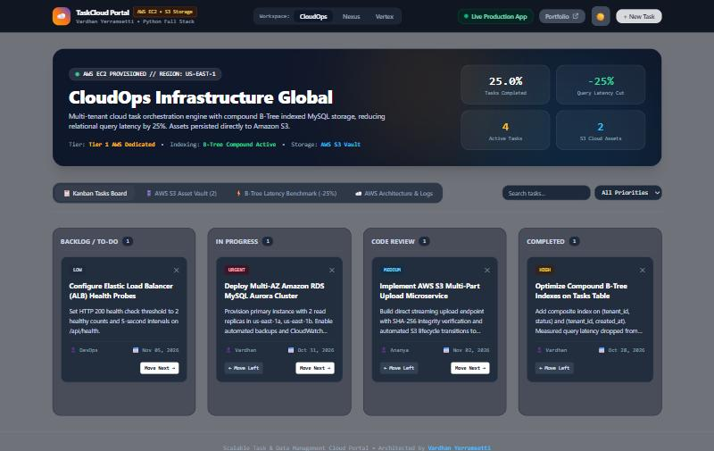

▶
On set · 2026
I'm a developer who lives where software meets data. I build high-throughput APIs with Flask and FastAPI, turn probabilistic and computer-vision models into real products, design databases that run 25% faster, and wrap it all in interfaces built with React and Next.js.
Open to opportunities — let's talk0
Production deployments on AWS & Vercel
−0%
Query latency cut with compound B-Tree indexes
>0%
Facial-expression classification accuracy
<0ms
Real-time customer-lifetime-value predictions